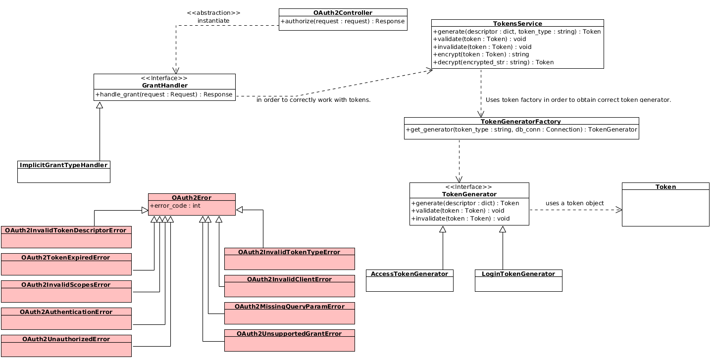

In this document you can find out information about OAUTH2 implementation in Fantastico framework. It is important to have read the previous sections before actually deep diving into technical details.
This class provides the routes specified in OAUTH 2 specification (RFC6479). A technical overview of OAuth2 implementation in Fantastico is presented below:
This method provides the /authorize endpoint compliant with RFC6479 standard. Authorize endpoint provides an API for obtaining an access token or an authorization code depending on the grant type.
This class provides a middleware responsible for decoding an access token (if exists) and building a security context. It is extremely import to configure this middleware to run after fantastico.middleware.request_middleware.RequestMiddleware and after fantastico.middleware.model_session_middleware.ModelSessionMiddleware because it needs a valid request and connection manager saved in the current pipeline execution.
This class provides the support for dynamically casting OAuth2 errors into concrete error responses. At the moment responses are returned only in english and have the format specified in RFC6749. Mainly, at each intercepted OAuth2 exceptions a json response is returned to the client.
This class provides the OAuth2 security context. Security context is available for each request and can be accessed using the following code snippet:
@Controller(url="/test/controller")
def handle_request(self, request):
security_ctx = request.context.security
# do something with security context
This property returns the current access token passed to the current http request. Access token is already decoded as documented in OAUTH2 Fantastico Tokens (encrypted section).
This property returns the current required scopes for http request. Required scopes are only available at runtime.
This method tries to validate the current security context using the current access token and required scopes. Internally, the method simply ensures required scopes are present in access token granted scopes. Moreover, it receives an optional parameter which allows requester to decide what section of required scopes it wants to validates. Valid values are: scopes, create_scopes, read_scopes, update_scopes or delete_scopes.
This class provides the decorator for enforcing fantastico to authorize requests against ROA resources and MVC controllers.
# enforce authorization for MVC controllers.
@ControllerProvider()
class SecuredController(BaseController):
@Controller(url="/secured-controller/ui/index")
@RequiredScopes(scopes=["greet.verbose", "greet.read"])
def say_hello(self, request):
return "<html><body><h1>Hello world</body></html>"
# enforce authorization for ROA resources.
@Resource(name="app-setting", url="/app-settings", version=1.0)
@RequiredScopes(create="app_setting.create",
read="app_setting.read",
update="app_setting.update",
delete="app_setting.delete"})
class AppSetting(BASEMODEL):
id = Column("id", Integer, primary_key=True, autoincrement=True)
name = Column("name", String(50), unique=True, nullable=False)
value = Column("value", Text, nullable=False)
def __init__(self, name, value):
self.name = name
self.value = value
This method injects the request scopes into request security context.
It is common in web applications to want to obtain the current authenticated user unique identifier so that additional information can be obtained in a secure context.
@Controller(url="^/users/ui/show-profile$") def show_profile(self, request): security_ctx = request.context.security user_id = security_ctx.access_token.user_id # use profile endpoint to obtain additional information.
It is common to want to access currently granted scopes for a given request. In order to do this use the following code snippet:
@Controller(url="^/sample-controller$") @RequiredScopes(scopes=["custom_scope1.read"]) def handle_request(self, request): access_token = request.context.security.access_token scopes = access_token.scopes # validate scopes
If you try to use access token property of security context when no access token is expected this will be None.
This class provides a token model which can be built from a generic dictionary. All dictionary keys become token members.
This class provides an abstraction for working with all supported token types. Internally it uses fantastico.oauth2.tokengenerator_factory.TokenGeneratorFactory for obtaining a correct token generator. Then, it delegates all calls to that token generator.
This method decrypts a given string and returns a concrete token object.
This method encrypts a given token and returns the encrypted string representation. Client id is required in order to obtain the encryption keys.
This method generates a concrete token from the given token descriptor. It uses token_type in order to choose the right token generator.
# extract db_conn from one of your controller injected facade models.
# generate a new access token
tokens_service = TokensService(db_conn)
token_desc = {"client_id": "sample-client",
"user_id": 123,
"scopes": "scope1 scope2 scope3",
"expires_in": 3600}
access_token = tokens_service.generate(token_desc, TokenGeneratorFactory.ACCESS_TOKEN)
This method invalidates a given token object. For instance, authorization codes can be invalidated. In order to invalidate a token you can use the code snippet below:
# extract db_conn from one of your controller injected facade models.
# extract token from request or instantiate a new token.
tokens_service = TokensService(db_conn)
tokens_service.invalidate(token)
This method validates a given token object. Internally, a generator is selected to validate the given token based on the given token type.
# extract db_conn from one of your controller injected facade models.
# extract token from request or instantiate a new token.
tokens_service = TokensService(db_conn)
tokens_service.validate(token)
This class provides the entry point for working with generators. It provides a factory for easily instantiating a generator which can work with a request token type.
login_generator = TokenGeneratorFactory().get_generator(TokenGeneratorFactory.LOGIN_TOKEN)
This method returns an instance of a token generator which can handel requested token type.
| Parameters: |
|
|---|---|
| Returns: | An instance of a concrete token generator which is compatible with the request token type. |
| Return type: |
This class provides an abstract contract which must be provided by each concrete token generator. A token generator must provide the following functionality:
- generate a new token
- validate a given token
- invalidate a given token
This method must be overriden so that it builds a correct token from the given descriptor. Descriptor is a free form object.
| Parameters: | token_desc (dict) – A dictionary containing all keys required for generating a new token. |
|---|---|
| Returns: | A new token object. |
| Return type: | fantastico.oauth2.token.Token |
This method must be overriden if the given token supports invalidation (e.g: authorization code). In many cases this is not necessary so this is a nop.
This method must be overriden so that it validates the given token. Usually, if the token is not valid a concrete exception must be raised.
| Parameters: | token (fantastico.oauth2.token.Token) – The token object we want to validate. |
|---|
This class provides support for generating and working with login tokens. A login token is used for proving that a user is authenticated correctly. For more information, read OAUTH2 Fantastico Tokens.
This method generates a login token. In order to succeed token descriptor must contain the following keys:
- client_id - a unique identifier for the idp which generated the token.
- user_id - idp user unique identifier.
- expires_in - an integer value in seconds determining the maximum validity of the token.
If any of the above keys are missing an oauth 2 exception is raised.
This class provides the methods for working with access tokens: (generate and validate).
This method generates a new access token starting from the givent token descriptor. In order to succeed the token descriptor must contain the following keys:
- client_id - Client unique identifier.
- user_id - User unique identifier.
- scopes - The scopes requested for this client (a space delimited list of strings).
- expires_in - The time to live period (in seconds) for the newly generated access token.
In Fantastico OAuth2, tokens are encrypted / decrypted using AES symmetric encryption. Below you can find the classes which provides AES implementation:
This class provides an abstract model for token encryption providers. A token encryption provider must be able to encrypt / decrypt a fantastico.oauth2.token.Token objects.
This method must be overriden by concrete providers in order to correctly transform an encrypted string into a token object.
| Parameters: |
|
|---|---|
| Returns: | Decrypted token object. |
| Return type: |
This method must be overriden by concrete providers in order to correctly transform a token object into an encrypted string.
| Parameters: |
|
|---|---|
| Returns: | The encrypted representation of the token. |
| Return type: | str |
This class provides a generic AES token encryption provider. It allows developers to specify the number of bits used for AES (128 / 192 / 256 bits).
This class provides a special token encryption: a mix of base64 encoded and symmetrical encrypted token. We need this mix because client_id is required for every operation involving oauth2 tokens.
This methods receives a public token representation and returns a concrete token object. In many cases token_iv and token_key will not be known so they will obtained from the public part of the token using client_id descriptor persisted in database.
This method takes a concrete token object and returns a base64 representation of the token. In the rare cases where the encryption vectors are not known client_repo is used to read client descriptor and lazy obtain the vectors.
This class provides the abstract contract of a handler. Each concrete handler must implement this contract in order to correctly extend Fantastico OAuth2 supported handlers.
This class provides a factory which can be used to obtain a concrete grant handler. Below you can find a code snippet for obtaining and implicit grant type handler:
grant_handler = GrantHandlerFactory().get_handler(GrantHandlerFactory.IMPLICIT_GRANT)
This method builds a grant handler which matches requested handler_type.
| Parameters: |
|
|---|---|
| Returns: | A concrete grant handler instance. |
| Return type: |
This class provides the implementation for implicit grant type described in RFC6749. Implementation of this grant type is fully compliant with OAuth2 spec. In addition to RFC6749, the implicit grant implemented in fantastico supports an additional query parameter named redirect which is optional. If redirect query parameter is specified with value 0 then a 200 OK response is returned to the client in comparison with redirect 1 value where 302 Found response is returned. We do this in order to support more advanced use cases where user can orchestrate the redirects rather than browser.
This method provides the algorithm for implementing implicit grant type handler. Internally it will use TokensService in order to generate a new access token. In addition, if redirect query parameter is set to false then a 200 OK response with Location header and no body is sent to the client.
This class provides the base class for OAuth2 exceptions. In order to be compliant with OAuth2 spec each oauth error is described by a status code, an error code and a friendly description.
This class provides a concrete exception used to notify a missing attribute from a token descriptor.
This class provides a concrete exception used to notify that a token has been sent to a token generator which does not support it or the token type is unknown.
This class provides a concrete exception used to notify that a token is expired.
This class provides a concrete exception used to notify an invalid client (not found or revoked).
This class provides a concrete exception used to notify that a client is not allowed to use a request set of scopes.
This class provides a concrete exception used to notify a missing query parameter from an OAuth2 endpoint.
This class provides a concrete exception used to notify an error during encrypt / decrypt token operations.
This class provides a concrete exception for notifying unsupport oauth2 grant type.
This class provides a concrete exception for notifying unauthorized access to oauth2 protected resources.